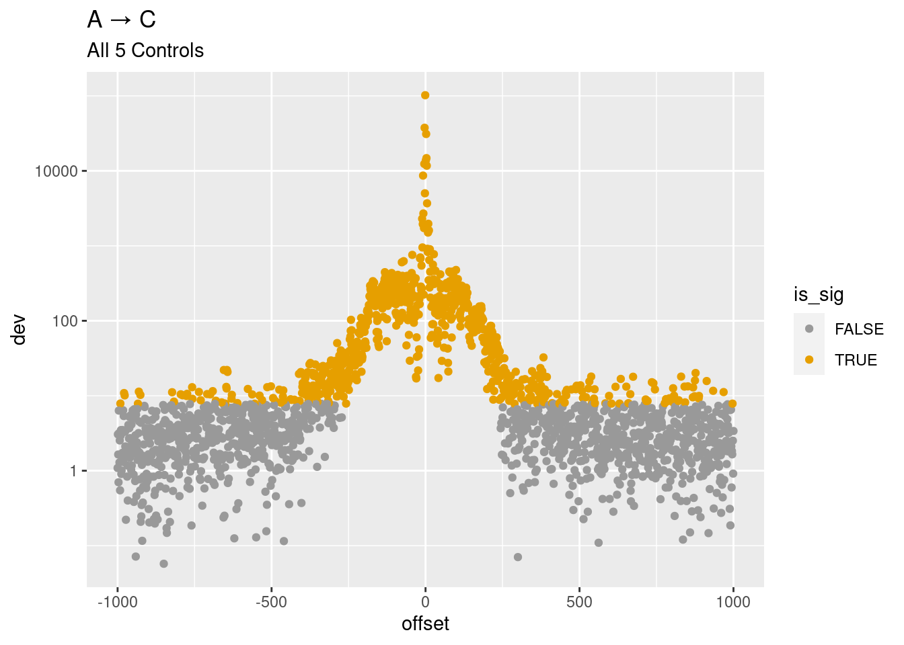
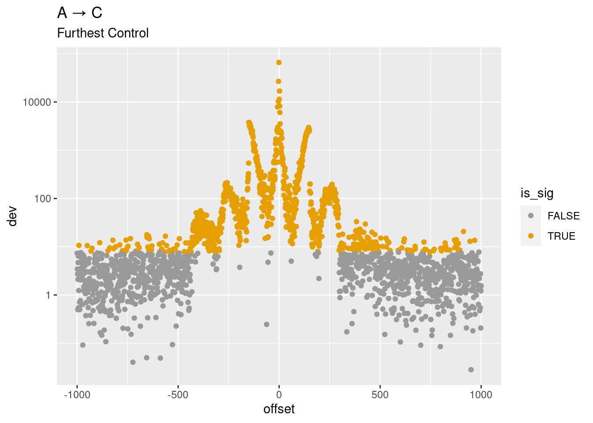
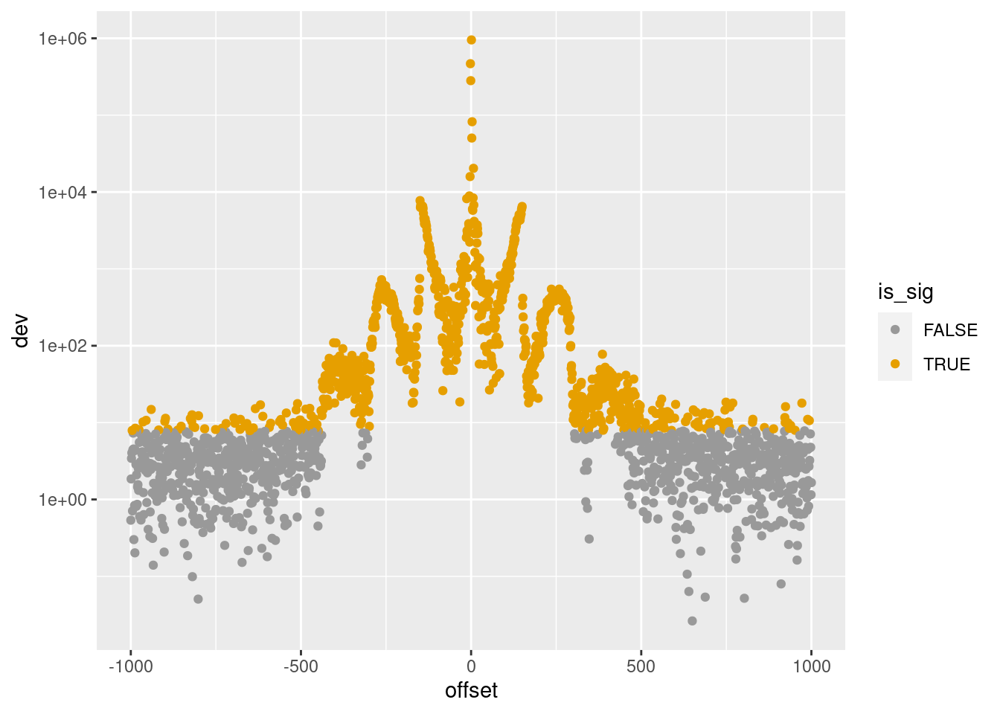

NYGC_near_v_far
Andy Beck
2023-11-09
Last updated: 2023-11-22
Checks: 7 0
Knit directory: LSCI/
This reproducible R Markdown analysis was created with workflowr (version 1.7.0). The Checks tab describes the reproducibility checks that were applied when the results were created. The Past versions tab lists the development history.
Great! Since the R Markdown file has been committed to the Git repository, you know the exact version of the code that produced these results.
Great job! The global environment was empty. Objects defined in the global environment can affect the analysis in your R Markdown file in unknown ways. For reproduciblity it’s best to always run the code in an empty environment.
The command set.seed(20211101) was run prior to running
the code in the R Markdown file. Setting a seed ensures that any results
that rely on randomness, e.g. subsampling or permutations, are
reproducible.
Great job! Recording the operating system, R version, and package versions is critical for reproducibility.
Nice! There were no cached chunks for this analysis, so you can be confident that you successfully produced the results during this run.
Great job! Using relative paths to the files within your workflowr project makes it easier to run your code on other machines.
Great! You are using Git for version control. Tracking code development and connecting the code version to the results is critical for reproducibility.
The results in this page were generated with repository version 1e0840a. See the Past versions tab to see a history of the changes made to the R Markdown and HTML files.
Note that you need to be careful to ensure that all relevant files for
the analysis have been committed to Git prior to generating the results
(you can use wflow_publish or
wflow_git_commit). workflowr only checks the R Markdown
file, but you know if there are other scripts or data files that it
depends on. Below is the status of the Git repository when the results
were generated:
Ignored files:
Ignored: .Rhistory
Ignored: .Rproj.user/
Ignored: analysis/disqus.html
Ignored: code/random/
Ignored: output/figs/
Untracked files:
Untracked: code/output_generation/single_pos_figures.R
Untracked: data/example.csv
Unstaged changes:
Modified: analysis/NYGC_control_control.Rmd
Note that any generated files, e.g. HTML, png, CSS, etc., are not included in this status report because it is ok for generated content to have uncommitted changes.
These are the previous versions of the repository in which changes were
made to the R Markdown (analysis/NYGC_near_v_far.Rmd) and
HTML (docs/NYGC_near_v_far.html) files. If you’ve
configured a remote Git repository (see ?wflow_git_remote),
click on the hyperlinks in the table below to view the files as they
were in that past version.
| File | Version | Author | Date | Message |
|---|---|---|---|---|
| Rmd | 1e0840a | Andy Beck | 2023-11-22 | wflow_publish("analysis/NYGC_near_v_far.Rmd") |
| html | a6758bb | Andy Beck | 2023-11-10 | Build site. |
| Rmd | e23cd4a | Andy Beck | 2023-11-10 | wflow_publish("analysis/NYGC_near_v_far.Rmd") |
| html | f19a326 | Andy Beck | 2023-11-09 | Build site. |
| Rmd | 0ee4366 | Andy Beck | 2023-11-09 | wflow_publish("analysis/NYGC_near_v_far.Rmd") |
Introduction
A > C
subtype <- "AT_CG"
df_min <- read_subtype_pop_res("ALL", subtype, ".min")
df_max <- read_subtype_pop_res("ALL", subtype, ".max")
df <- read_subtype_pop_res("ALL", subtype)
df_min$type <- "min"
df_max$type <- "max"
#df <- bind_rows(df_min, df_max) %>%
# arrange(abs(offset))
df %>%
mutate(is_sig = dev > qchisq(p=.05, df=3, lower.tail=FALSE)) %>%
ggplot(aes(x = offset, y = dev, color = is_sig)) +
geom_point() +
scale_y_log10() +
scale_color_manual(values=cbPalette) +
ggtitle("A → C", "All 5 Controls")
df_min %>%
mutate(is_sig = dev > qchisq(p=.05, df=3, lower.tail=FALSE)) %>%
ggplot(aes(x = offset, y = dev, color = is_sig)) +
geom_point() +
scale_y_log10() +
scale_color_manual(values=cbPalette) +
ggtitle("A → C", "Nearest Control")
df_max %>%
mutate(is_sig = dev > qchisq(p=.05, df=3, lower.tail=FALSE)) %>%
ggplot(aes(x = offset, y = dev, color = is_sig)) +
geom_point() +
scale_y_log10() +
scale_color_manual(values=cbPalette) +
ggtitle("A → C", "Furthest Control")
bind_rows(df_min, df_max) %>%
arrange(abs(offset)) %>%
mutate(is_sig = dev > qchisq(p=.05, df=3, lower.tail=FALSE)) %>%
ggplot(aes(x = offset, y = dev, color = is_sig, shape = type)) +
geom_point() +
geom_line(aes(group = type)) +
scale_y_log10() +
scale_color_manual(values=cbPalette) +
ggtitle("A → C")A > G
subtype <- "AT_GC"
df_min <- read_subtype_pop_res("ALL", subtype, ".min")
df_max <- read_subtype_pop_res("ALL", subtype, ".max")
df <- read_subtype_pop_res("ALL", subtype)
df_min$type <- "min"
df_max$type <- "max"
#df <- bind_rows(df_min, df_max) %>%
# arrange(abs(offset))
df %>%
mutate(is_sig = dev > qchisq(p=.05, df=3, lower.tail=FALSE)) %>%
ggplot(aes(x = offset, y = dev, color = is_sig)) +
geom_point() +
scale_y_log10() +
scale_color_manual(values=cbPalette)
df_min %>%
mutate(is_sig = dev > qchisq(p=.05, df=3, lower.tail=FALSE)) %>%
ggplot(aes(x = offset, y = dev, color = is_sig)) +
geom_point() +
scale_y_log10() +
scale_color_manual(values=cbPalette)
df_max %>%
mutate(is_sig = dev > qchisq(p=.05, df=3, lower.tail=FALSE)) %>%
ggplot(aes(x = offset, y = dev, color = is_sig)) +
geom_point() +
scale_y_log10() +
scale_color_manual(values=cbPalette)
CpG > GpG
subtype <- "cpg_GC_AT"
df_min <- read_subtype_pop_res("ALL", subtype, ".min")
df_max <- read_subtype_pop_res("ALL", subtype, ".max")
df <- read_subtype_pop_res("ALL", subtype)
df_min$type <- "min"
df_max$type <- "max"
#df <- bind_rows(df_min, df_max) %>%
# arrange(abs(offset))
df_min %>%
mutate(is_sig = dev > qchisq(p=.05, df=3, lower.tail=FALSE)) %>%
ggplot(aes(x = offset, y = dev, color = is_sig)) +
geom_point() +
scale_y_log10() +
scale_color_manual(values=cbPalette)df_max %>%
mutate(is_sig = dev > qchisq(p=.05, df=3, lower.tail=FALSE)) %>%
ggplot(aes(x = offset, y = dev, color = is_sig)) +
geom_point() +
scale_y_log10() +
scale_color_manual(values=cbPalette)df %>%
mutate(is_sig = dev > qchisq(p=.05, df=3, lower.tail=FALSE)) %>%
ggplot(aes(x = offset, y = dev, color = is_sig)) +
geom_point() +
scale_y_log10() +
scale_color_manual(values=cbPalette)Residuals
At some point I decided to only run the slurm jobs to generate the residual-level results, since these can be used to generate the single position effects.
resid_dir <- "/net/snowwhite/home/beckandy/research/1000G_NYGC_LSCI/output/single_pos/resid/ALL/"
get_position_level <- function(subtype, suffix, max_d = 1000,
resid_dir = "/net/snowwhite/home/beckandy/research/1000G_NYGC_LSCI/output/single_pos/resid/ALL/") {
final <- data.frame(pos = c((-max_d):-1, 1:max_d), dev = 0, re = 0)
for(i in 1:length(final$pos)){
rp <- final$pos[i]
if(rp == 1 & str_starts(subtype, "cpg")){
final$dev[i] <- NA
final$re[i] <- NA
} else{
df <- read_csv(paste0(resid_dir, subtype, "_rp_", rp, ".csv", suffix), show_col_types = FALSE)
mod_obj <- glm(n ~ status + nuc, data = df, family = poisson)
final$dev[i] <- deviance(mod_obj)
final$re[i] <- final$dev[i] / (2 * sum(df$n))
}
}
return(final)
}
df_t <- get_position_level("AT_GC", ".min")
df_t %>%
mutate(is_sig = dev > qchisq(p=.05, df=3, lower.tail=FALSE)) %>%
ggplot(aes(x = pos, y = dev, color = is_sig)) +
geom_point() +
scale_y_log10() +
scale_color_manual(values=cbPalette) +
ggtitle("MIN")df_t <- get_position_level("AT_GC", ".max")
df_t %>%
mutate(is_sig = dev > qchisq(p=.05, df=3, lower.tail=FALSE)) %>%
ggplot(aes(x = pos, y = dev, color = is_sig)) +
geom_point() +
scale_y_log10() +
scale_color_manual(values=cbPalette) +
ggtitle("MAX")df_t %>%
filter(abs(pos)<=300) %>%
mutate(is_sig = dev > qchisq(p=.05, df=3, lower.tail=FALSE)) %>%
ggplot(aes(x = pos, y = dev, color = is_sig)) +
geom_point() +
scale_y_log10() +
scale_color_manual(values=cbPalette) +
ggtitle("MAX")df <- read_csv("/net/snowwhite/home/beckandy/research/1000G_NYGC_LSCI/output/single_pos/resid/ALL/AT_CG_rp_100.csv.max")Rows: 8 Columns: 5
── Column specification ────────────────────────────────────────────────────────
Delimiter: ","
chr (2): nuc, status
dbl (3): n, fitted, res
ℹ Use `spec()` to retrieve the full column specification for this data.
ℹ Specify the column types or set `show_col_types = FALSE` to quiet this message.df <- df %>% filter(status == "singletons") %>% arrange(res)
get_influ_nucs <- function(subtype, suffix, max_d = 1000,
resid_dir = "/net/snowwhite/home/beckandy/research/1000G_NYGC_LSCI/output/single_pos/resid/ALL/") {
pos_list <- c((-max_d):-1, 1:max_d)
min_nuc <- rep(NA, length(pos_list)) # better names would've been depleted/enriched
max_nuc <- rep(NA, length(pos_list))
for(i in 1:length(pos_list)){
rp <- pos_list[i]
if(rp == 1 & str_starts(subtype, "cpg")){
next
} else{
df <- read_csv(paste0(resid_dir, subtype, "_rp_", rp, ".csv", suffix), show_col_types = FALSE) %>%
filter(status == "singletons") %>%
arrange(res)
min_nuc[i] <- df$nuc[1]
max_nuc[i] <- df$nuc[4]
}
}
final <- data.frame(pos = pos_list, dep_nuc = min_nuc, enr_nuc = max_nuc)
return(final)
}
df_max <- get_influ_nucs("AT_TA", ".max")
df_min <- get_influ_nucs("AT_TA", ".min")
df_max pos dep_nuc enr_nuc
1 -1000 C G
2 -999 T G
3 -998 G C
4 -997 T C
5 -996 A T
6 -995 A G
7 -994 T A
8 -993 A C
9 -992 G T
10 -991 C T
11 -990 A G
12 -989 A C
13 -988 A C
14 -987 G A
15 -986 T A
16 -985 T C
17 -984 C A
18 -983 A G
19 -982 A G
20 -981 T C
21 -980 C T
22 -979 T A
23 -978 G T
24 -977 C G
25 -976 C T
26 -975 G C
27 -974 T C
28 -973 T A
29 -972 G A
30 -971 T C
31 -970 G A
32 -969 T C
33 -968 G T
34 -967 G A
35 -966 C T
36 -965 T C
37 -964 T A
38 -963 C G
39 -962 T C
40 -961 G A
41 -960 C A
42 -959 A T
43 -958 A G
44 -957 T C
45 -956 A T
46 -955 G C
47 -954 C A
48 -953 G T
49 -952 T A
50 -951 C A
51 -950 A C
52 -949 G A
53 -948 T C
54 -947 C T
55 -946 A G
56 -945 C G
57 -944 T G
58 -943 C A
59 -942 G C
60 -941 A T
61 -940 T A
62 -939 A G
63 -938 T C
64 -937 C A
65 -936 G A
66 -935 T G
67 -934 T A
68 -933 A T
69 -932 C A
70 -931 G A
71 -930 A C
72 -929 T A
73 -928 C T
74 -927 A T
75 -926 A C
76 -925 G C
77 -924 T C
78 -923 T C
79 -922 G A
80 -921 A G
81 -920 C A
82 -919 G C
83 -918 G A
84 -917 G C
85 -916 G C
86 -915 G C
87 -914 G A
88 -913 A T
89 -912 A T
90 -911 G C
91 -910 T A
92 -909 A G
93 -908 T C
94 -907 C A
95 -906 A G
96 -905 C T
97 -904 T C
98 -903 A C
99 -902 C A
100 -901 A T
101 -900 T A
102 -899 C T
103 -898 C A
104 -897 C A
105 -896 C G
106 -895 A T
107 -894 G A
108 -893 G T
109 -892 G T
110 -891 A T
111 -890 C T
112 -889 C T
113 -888 T G
114 -887 C T
115 -886 C T
116 -885 C T
117 -884 C A
118 -883 G C
119 -882 G T
120 -881 A T
121 -880 G C
122 -879 G T
123 -878 G C
124 -877 G T
125 -876 T C
126 -875 G T
127 -874 T G
128 -873 G C
129 -872 C T
130 -871 C T
131 -870 C G
132 -869 C A
133 -868 C A
134 -867 C G
135 -866 C T
136 -865 G A
137 -864 C T
138 -863 A T
139 -862 A T
140 -861 A C
141 -860 G T
142 -859 C A
143 -858 G A
144 -857 G A
145 -856 C A
146 -855 G A
147 -854 A C
148 -853 G T
149 -852 G T
150 -851 A G
151 -850 G T
152 -849 A C
153 -848 A T
154 -847 G T
155 -846 C A
156 -845 C G
157 -844 A T
158 -843 G A
159 -842 C T
160 -841 C G
161 -840 A G
162 -839 C A
163 -838 T C
164 -837 G A
165 -836 A T
166 -835 C G
167 -834 C T
168 -833 G A
169 -832 G T
170 -831 C A
171 -830 C G
172 -829 G A
173 -828 C T
174 -827 C A
175 -826 A C
176 -825 G T
177 -824 C A
178 -823 A T
179 -822 A T
180 -821 A G
181 -820 T C
182 -819 C T
183 -818 A T
184 -817 A G
185 -816 C A
186 -815 G T
187 -814 A C
188 -813 C G
189 -812 C G
190 -811 C G
191 -810 G A
192 -809 C T
193 -808 A C
194 -807 C G
195 -806 T G
196 -805 G A
197 -804 C G
198 -803 T A
199 -802 C A
200 -801 T C
201 -800 C T
202 -799 A C
203 -798 G C
204 -797 A C
205 -796 G T
206 -795 T C
207 -794 A G
208 -793 C A
209 -792 T C
210 -791 G A
211 -790 T A
212 -789 T G
213 -788 T G
214 -787 T C
215 -786 C G
216 -785 A G
217 -784 A G
218 -783 T A
219 -782 T C
220 -781 C G
221 -780 A G
222 -779 C A
223 -778 T G
224 -777 G C
225 -776 C G
226 -775 T A
227 -774 T A
228 -773 T C
229 -772 G C
230 -771 C G
231 -770 A C
232 -769 T A
233 -768 T C
234 -767 T A
235 -766 A G
236 -765 C G
237 -764 T C
238 -763 T C
239 -762 T A
240 -761 T A
241 -760 C T
242 -759 T G
243 -758 T C
244 -757 G C
245 -756 G C
246 -755 G C
247 -754 T C
248 -753 G C
249 -752 C A
250 -751 C A
251 -750 T G
252 -749 T A
253 -748 G T
254 -747 T C
255 -746 G A
256 -745 A T
257 -744 G C
258 -743 G T
259 -742 T C
260 -741 A C
261 -740 T C
262 -739 C G
263 -738 C T
264 -737 G A
265 -736 T G
266 -735 G A
267 -734 A T
268 -733 T G
269 -732 T G
270 -731 T A
271 -730 G C
272 -729 G C
273 -728 T A
274 -727 A G
275 -726 G A
276 -725 T C
277 -724 G T
278 -723 G A
279 -722 G C
280 -721 G A
281 -720 C G
282 -719 T A
283 -718 C T
284 -717 C T
285 -716 G T
286 -715 C A
287 -714 G C
288 -713 G C
289 -712 G A
290 -711 A C
291 -710 A C
292 -709 A T
293 -708 A C
294 -707 G C
295 -706 G C
296 -705 G C
297 -704 A T
298 -703 A C
299 -702 C T
300 -701 T G
301 -700 G C
302 -699 C A
303 -698 C G
304 -697 T G
305 -696 A C
306 -695 G C
307 -694 C T
308 -693 G T
309 -692 G C
310 -691 G T
311 -690 G T
312 -689 C A
313 -688 G C
314 -687 G C
315 -686 G T
316 -685 A G
317 -684 C G
318 -683 A T
319 -682 A C
320 -681 G C
321 -680 G C
322 -679 A C
323 -678 G C
324 -677 C G
325 -676 A G
326 -675 A G
327 -674 G A
328 -673 T A
329 -672 T G
330 -671 T C
331 -670 G A
332 -669 C A
333 -668 C G
334 -667 G T
335 -666 C T
336 -665 T A
337 -664 A C
338 -663 T C
339 -662 G A
340 -661 A T
341 -660 C T
342 -659 T G
343 -658 G A
344 -657 T A
345 -656 A T
346 -655 G C
347 -654 A T
348 -653 C G
349 -652 C T
350 -651 A G
351 -650 C A
352 -649 A T
353 -648 C G
354 -647 C G
355 -646 C A
356 -645 C G
357 -644 C G
358 -643 T A
359 -642 C T
360 -641 C G
361 -640 A C
362 -639 A C
363 -638 C A
364 -637 C A
365 -636 C A
366 -635 C G
367 -634 C G
368 -633 T A
369 -632 T G
370 -631 C A
371 -630 T A
372 -629 T C
373 -628 C T
374 -627 A C
375 -626 C T
376 -625 G C
377 -624 T C
378 -623 T G
379 -622 T A
380 -621 C T
381 -620 T C
382 -619 C G
383 -618 C G
384 -617 T G
385 -616 C T
386 -615 T G
387 -614 A G
388 -613 C G
389 -612 C G
390 -611 A G
391 -610 A G
392 -609 T A
393 -608 T G
394 -607 T G
395 -606 A G
396 -605 C A
397 -604 A G
398 -603 A G
399 -602 C G
400 -601 C T
401 -600 G C
402 -599 A G
403 -598 T G
404 -597 T G
405 -596 T C
406 -595 C A
407 -594 T G
408 -593 T A
409 -592 T A
410 -591 T C
411 -590 T A
412 -589 T G
413 -588 T C
414 -587 C G
415 -586 T G
416 -585 T G
417 -584 T A
418 -583 C G
419 -582 A G
420 -581 T G
421 -580 A G
422 -579 C A
423 -578 T C
424 -577 T C
425 -576 A G
426 -575 A T
427 -574 T G
428 -573 T C
429 -572 T A
430 -571 T A
431 -570 T C
432 -569 T A
433 -568 C G
434 -567 A G
435 -566 T A
436 -565 A G
437 -564 C G
438 -563 C G
439 -562 T G
440 -561 A C
441 -560 C G
442 -559 T G
443 -558 G A
444 -557 C A
445 -556 T G
446 -555 T A
447 -554 T G
448 -553 T A
449 -552 A G
450 -551 C G
451 -550 A C
452 -549 A T
453 -548 T C
454 -547 A G
455 -546 A C
456 -545 A C
457 -544 T C
458 -543 G C
459 -542 A G
460 -541 T C
461 -540 G C
462 -539 T C
463 -538 A C
464 -537 A C
465 -536 A C
466 -535 T C
467 -534 A C
468 -533 A C
469 -532 T C
470 -531 A G
471 -530 A G
472 -529 T C
473 -528 G C
474 -527 T G
475 -526 A C
476 -525 G T
477 -524 A C
478 -523 C G
479 -522 T C
480 -521 A C
481 -520 A C
482 -519 A G
483 -518 T C
484 -517 T C
485 -516 G A
486 -515 G C
487 -514 A C
488 -513 T C
489 -512 T C
490 -511 A C
491 -510 A C
492 -509 A C
493 -508 A T
494 -507 A T
495 -506 G C
496 -505 G T
497 -504 G T
498 -503 C G
499 -502 G A
500 -501 C G
501 -500 A G
502 -499 C A
503 -498 G C
504 -497 A C
505 -496 A C
506 -495 C T
507 -494 T C
508 -493 T A
509 -492 T C
510 -491 G C
511 -490 T A
512 -489 G A
513 -488 A T
514 -487 G T
515 -486 G T
516 -485 C A
517 -484 T A
518 -483 A T
519 -482 C A
520 -481 G T
521 -480 A T
522 -479 G C
523 -478 C T
524 -477 C A
525 -476 G A
526 -475 T A
527 -474 G T
528 -473 C A
529 -472 C T
530 -471 C A
531 -470 C A
532 -469 C A
533 -468 T A
534 -467 C T
535 -466 C A
536 -465 T A
537 -464 A T
538 -463 C G
539 -462 C A
540 -461 T G
541 -460 T A
542 -459 G T
543 -458 G C
544 -457 G C
545 -456 G T
546 -455 A G
547 -454 G T
548 -453 G A
549 -452 C A
550 -451 T A
551 -450 T G
552 -449 T A
553 -448 G A
554 -447 C A
555 -446 G A
556 -445 C G
557 -444 G A
558 -443 A C
559 -442 G T
560 -441 C T
561 -440 C T
562 -439 T A
563 -438 C A
564 -437 C A
565 -436 G A
566 -435 G A
567 -434 G A
568 -433 G A
569 -432 C A
570 -431 G T
571 -430 G T
572 -429 G A
573 -428 G A
574 -427 C A
575 -426 C A
576 -425 C A
577 -424 C A
578 -423 C A
579 -422 C A
580 -421 C A
581 -420 G A
582 -419 C A
583 -418 G A
584 -417 G A
585 -416 C A
586 -415 C A
587 -414 C A
588 -413 T A
589 -412 C A
590 -411 C A
591 -410 C A
592 -409 G A
593 -408 G A
594 -407 C A
595 -406 G A
596 -405 C T
597 -404 C A
598 -403 C T
599 -402 C A
600 -401 C T
601 -400 G A
602 -399 G A
603 -398 G A
604 -397 C A
605 -396 C A
606 -395 C A
607 -394 C A
608 -393 C A
609 -392 C A
610 -391 C A
611 -390 C A
612 -389 C A
613 -388 C A
614 -387 G A
615 -386 C A
616 -385 C T
617 -384 C A
618 -383 C T
619 -382 G A
620 -381 G A
621 -380 C A
622 -379 C A
623 -378 G A
624 -377 C T
625 -376 C A
626 -375 C A
627 -374 C A
628 -373 C A
629 -372 C A
630 -371 G A
631 -370 G T
632 -369 C T
633 -368 C A
634 -367 C T
635 -366 C T
636 -365 C A
637 -364 C A
638 -363 G T
639 -362 C A
640 -361 G T
641 -360 C A
642 -359 C A
643 -358 G A
644 -357 C A
645 -356 C A
646 -355 C A
647 -354 C G
648 -353 C T
649 -352 G A
650 -351 C A
651 -350 C A
652 -349 C A
653 -348 C T
654 -347 C T
655 -346 G A
656 -345 C T
657 -344 C A
658 -343 C T
659 -342 C T
660 -341 C G
661 -340 C T
662 -339 C T
663 -338 C T
664 -337 C T
665 -336 C A
666 -335 C A
667 -334 C A
668 -333 C A
669 -332 C A
670 -331 C A
671 -330 C A
672 -329 C A
673 -328 C T
674 -327 C A
675 -326 C T
676 -325 C G
677 -324 G T
678 -323 C A
679 -322 C A
680 -321 C T
681 -320 A T
682 -319 C A
683 -318 C T
684 -317 C G
685 -316 A T
686 -315 A T
687 -314 G T
688 -313 C A
689 -312 C T
690 -311 C G
691 -310 C T
692 -309 G T
693 -308 C A
694 -307 C A
695 -306 C A
696 -305 T A
697 -304 C T
698 -303 C A
699 -302 C G
700 -301 C G
701 -300 C G
702 -299 C A
703 -298 T A
704 -297 T G
705 -296 T A
706 -295 T A
707 -294 T G
708 -293 T A
709 -292 C A
710 -291 C A
711 -290 T A
712 -289 T A
713 -288 G A
714 -287 T A
715 -286 T A
716 -285 T A
717 -284 T A
718 -283 T A
719 -282 T A
720 -281 T A
721 -280 T A
722 -279 T A
723 -278 T A
724 -277 T A
725 -276 T A
726 -275 T A
727 -274 G A
728 -273 T A
729 -272 T A
730 -271 T A
731 -270 G A
732 -269 T A
733 -268 T A
734 -267 T A
735 -266 T A
736 -265 T A
737 -264 G A
738 -263 T A
739 -262 T A
740 -261 T A
741 -260 T A
742 -259 T A
743 -258 T A
744 -257 T A
745 -256 T A
746 -255 T A
747 -254 T A
748 -253 T A
749 -252 C A
750 -251 T A
751 -250 T A
752 -249 T A
753 -248 T A
754 -247 T A
755 -246 T A
756 -245 T A
757 -244 T A
758 -243 T A
759 -242 T A
760 -241 C A
761 -240 C A
762 -239 G A
763 -238 G A
764 -237 G A
765 -236 C A
766 -235 C A
767 -234 C A
768 -233 T A
769 -232 C A
770 -231 C A
771 -230 G A
772 -229 G A
773 -228 G A
774 -227 G A
775 -226 G A
776 -225 G A
777 -224 C A
778 -223 T A
779 -222 C A
780 -221 C A
781 -220 G A
782 -219 G A
783 -218 G A
784 -217 G A
785 -216 G A
786 -215 G A
787 -214 C A
788 -213 G A
789 -212 G A
790 -211 G A
791 -210 G A
792 -209 G A
793 -208 T A
794 -207 C A
795 -206 T A
796 -205 T A
797 -204 T A
798 -203 T A
799 -202 T A
800 -201 T A
801 -200 G A
802 -199 G A
803 -198 C A
804 -197 G A
805 -196 C A
806 -195 G A
807 -194 C A
808 -193 T A
809 -192 C A
810 -191 G A
811 -190 T A
812 -189 C A
813 -188 C A
814 -187 C A
815 -186 C A
816 -185 C A
817 -184 C A
818 -183 C A
819 -182 C T
820 -181 G A
821 -180 C A
822 -179 C A
823 -178 G A
824 -177 C A
825 -176 C A
826 -175 C A
827 -174 G A
828 -173 G A
829 -172 C T
830 -171 C G
831 -170 A G
832 -169 C G
833 -168 C G
834 -167 C G
835 -166 C G
836 -165 C G
837 -164 C G
838 -163 C G
839 -162 C G
840 -161 A G
841 -160 A G
842 -159 A G
843 -158 A G
844 -157 A G
845 -156 A G
846 -155 A G
847 -154 A G
848 -153 A G
849 -152 A G
850 -151 A G
851 -150 A G
852 -149 A G
853 -148 A G
854 -147 A G
855 -146 A G
856 -145 A G
857 -144 A G
858 -143 A G
859 -142 A G
860 -141 A G
861 -140 A G
862 -139 A G
863 -138 A G
864 -137 A G
865 -136 A G
866 -135 A C
867 -134 A C
868 -133 A G
869 -132 A G
870 -131 A G
871 -130 A G
872 -129 A C
873 -128 A C
874 -127 A G
875 -126 A G
876 -125 A C
877 -124 A C
878 -123 A G
879 -122 A G
880 -121 A G
881 -120 A G
882 -119 A C
883 -118 A G
884 -117 A C
885 -116 A C
886 -115 A G
887 -114 A G
888 -113 A G
889 -112 A G
890 -111 A G
891 -110 A G
892 -109 A G
893 -108 A C
894 -107 A G
895 -106 A G
896 -105 A G
897 -104 A G
898 -103 A G
899 -102 A G
900 -101 A G
901 -100 A C
902 -99 A C
903 -98 A C
904 -97 A G
905 -96 A G
906 -95 A G
907 -94 A G
908 -93 A C
909 -92 A C
910 -91 A C
911 -90 A C
912 -89 A G
913 -88 A C
914 -87 A C
915 -86 T C
916 -85 T G
917 -84 A C
918 -83 T G
919 -82 T G
920 -81 T G
921 -80 T G
922 -79 A C
923 -78 A C
924 -77 A C
925 -76 G C
926 -75 A T
927 -74 A C
928 -73 T A
929 -72 T G
930 -71 T G
931 -70 A C
932 -69 A C
933 -68 A C
934 -67 A C
935 -66 T G
936 -65 T G
937 -64 A C
938 -63 T C
939 -62 G A
940 -61 A T
941 -60 A C
942 -59 G C
943 -58 T G
944 -57 T A
945 -56 G C
946 -55 G T
947 -54 G T
948 -53 T C
949 -52 G A
950 -51 T A
951 -50 T A
952 -49 T A
953 -48 T A
954 -47 G C
955 -46 G C
956 -45 G A
957 -44 G C
958 -43 G A
959 -42 C A
960 -41 T A
961 -40 T A
962 -39 T A
963 -38 G C
964 -37 T C
965 -36 G C
966 -35 G T
967 -34 G A
968 -33 C A
969 -32 C A
970 -31 T A
971 -30 T A
972 -29 G A
973 -28 G A
974 -27 G A
975 -26 G A
976 -25 G A
977 -24 G A
978 -23 G A
979 -22 G A
980 -21 G A
981 -20 G A
982 -19 G A
983 -18 G A
984 -17 G A
985 -16 G A
986 -15 G A
987 -14 G A
988 -13 G A
989 -12 G T
990 -11 C A
991 -10 C A
992 -9 G A
993 -8 G A
994 -7 G A
995 -6 G A
996 -5 G A
997 -4 G A
998 -3 G A
999 -2 C A
1000 -1 A G
1001 1 A T
1002 2 A T
1003 3 G T
1004 4 C T
1005 5 C A
1006 6 G A
1007 7 G T
1008 8 G T
1009 9 G T
1010 10 C T
1011 11 C A
1012 12 C A
1013 13 C A
1014 14 C A
1015 15 C A
1016 16 G A
1017 17 G A
1018 18 G A
1019 19 G A
1020 20 G A
1021 21 G A
1022 22 C A
1023 23 C A
1024 24 A T
1025 25 G T
1026 26 A C
1027 27 G T
1028 28 C A
1029 29 C A
1030 30 G C
1031 31 G T
1032 32 G A
1033 33 T A
1034 34 G A
1035 35 G A
1036 36 G A
1037 37 C A
1038 38 C A
1039 39 A T
1040 40 C T
1041 41 T G
1042 42 T A
1043 43 C G
1044 44 T A
1045 45 T G
1046 46 A C
1047 47 T C
1048 48 A T
1049 49 A C
1050 50 G T
1051 51 T A
1052 52 C A
1053 53 T A
1054 54 A C
1055 55 A C
1056 56 A G
1057 57 C A
1058 58 C G
1059 59 A T
1060 60 A G
1061 61 T G
1062 62 C T
1063 63 A G
1064 64 G A
1065 65 T G
1066 66 A G
1067 67 A C
1068 68 A T
1069 69 A T
1070 70 A T
1071 71 A G
1072 72 A G
1073 73 A G
1074 74 A C
1075 75 A C
1076 76 A G
1077 77 A C
1078 78 A C
1079 79 A C
1080 80 A C
1081 81 A T
1082 82 A C
1083 83 A C
1084 84 A G
1085 85 A C
1086 86 A C
1087 87 A C
1088 88 A C
1089 89 A C
1090 90 A G
1091 91 A C
1092 92 A C
1093 93 A C
1094 94 A C
1095 95 A C
1096 96 A G
1097 97 A C
1098 98 A C
1099 99 A C
1100 100 A G
1101 101 A G
1102 102 A G
1103 103 A G
1104 104 A C
1105 105 A C
1106 106 A C
1107 107 A C
1108 108 A C
1109 109 A C
1110 110 A C
1111 111 A C
1112 112 A C
1113 113 A C
1114 114 A C
1115 115 A G
1116 116 A C
1117 117 A C
1118 118 A C
1119 119 A C
1120 120 A C
1121 121 A C
1122 122 A C
1123 123 A C
1124 124 A C
1125 125 A C
1126 126 A G
1127 127 A C
1128 128 A C
1129 129 A C
1130 130 A C
1131 131 A C
1132 132 A G
1133 133 A C
1134 134 A C
1135 135 A C
1136 136 A C
1137 137 A C
1138 138 A C
1139 139 A C
1140 140 A C
1141 141 A C
1142 142 A C
1143 143 A C
1144 144 A C
1145 145 A C
1146 146 A C
1147 147 A C
1148 148 A C
1149 149 A C
1150 150 A C
1151 151 T C
1152 152 T C
1153 153 T C
1154 154 T C
1155 155 T C
1156 156 T C
1157 157 A C
1158 158 A C
1159 159 A C
1160 160 A C
1161 161 T C
1162 162 T C
1163 163 G C
1164 164 T C
1165 165 G A
1166 166 G T
1167 167 G C
1168 168 G T
1169 169 G T
1170 170 G C
1171 171 G T
1172 172 A C
1173 173 G T
1174 174 T G
1175 175 C T
1176 176 C T
1177 177 T A
1178 178 T A
1179 179 C A
1180 180 T G
1181 181 T A
1182 182 T A
1183 183 T G
1184 184 T A
1185 185 T G
1186 186 T C
1187 187 T C
1188 188 G A
1189 189 T A
1190 190 T A
1191 191 T A
1192 192 T A
1193 193 T A
1194 194 T A
1195 195 T G
1196 196 C A
1197 197 T A
1198 198 C A
1199 199 C A
1200 200 C A
1201 201 C G
1202 202 T A
1203 203 C A
1204 204 T A
1205 205 T A
1206 206 T A
1207 207 T A
1208 208 T A
1209 209 C A
1210 210 T A
1211 211 T A
1212 212 G A
1213 213 T A
1214 214 T A
1215 215 T A
1216 216 T A
1217 217 G A
1218 218 T A
1219 219 T A
1220 220 G A
1221 221 G A
1222 222 T A
1223 223 G A
1224 224 T A
1225 225 T A
1226 226 T A
1227 227 T A
1228 228 T A
1229 229 T A
1230 230 T A
1231 231 T A
1232 232 T A
1233 233 T A
1234 234 T A
1235 235 T A
1236 236 T A
1237 237 T A
1238 238 T A
1239 239 T A
1240 240 T A
1241 241 T A
1242 242 T A
1243 243 T A
1244 244 T A
1245 245 T A
1246 246 T A
1247 247 T A
1248 248 T A
1249 249 T A
1250 250 T A
1251 251 T A
1252 252 T A
1253 253 T A
1254 254 T A
1255 255 T A
1256 256 T A
1257 257 T A
1258 258 T A
1259 259 T A
1260 260 T A
1261 261 T A
1262 262 T A
1263 263 T A
1264 264 C A
1265 265 C A
1266 266 T A
1267 267 T A
1268 268 C A
1269 269 C A
1270 270 C A
1271 271 T A
1272 272 C A
1273 273 C A
1274 274 C A
1275 275 C A
1276 276 T A
1277 277 C A
1278 278 T A
1279 279 T A
1280 280 T A
1281 281 T A
1282 282 T A
1283 283 T A
1284 284 C A
1285 285 T A
1286 286 T A
1287 287 C A
1288 288 T A
1289 289 T A
1290 290 T A
1291 291 T A
1292 292 T A
1293 293 T A
1294 294 C A
1295 295 C A
1296 296 C A
1297 297 T A
1298 298 C A
1299 299 C A
1300 300 C A
1301 301 C A
1302 302 C T
1303 303 T A
1304 304 G C
1305 305 G T
1306 306 A T
1307 307 G T
1308 308 G A
1309 309 G T
1310 310 T A
1311 311 C T
1312 312 T G
1313 313 C A
1314 314 C T
1315 315 C T
1316 316 C G
1317 317 C T
1318 318 C G
1319 319 C A
1320 320 G A
1321 321 C A
1322 322 T A
1323 323 C A
1324 324 C A
1325 325 C G
1326 326 C T
1327 327 C T
1328 328 G A
1329 329 C T
1330 330 G T
1331 331 G A
1332 332 G A
1333 333 C A
1334 334 C A
1335 335 C A
1336 336 G A
1337 337 T A
1338 338 C A
1339 339 G A
1340 340 C T
1341 341 T C
1342 342 C T
1343 343 C T
1344 344 C T
1345 345 G A
1346 346 G A
1347 347 C A
1348 348 C A
1349 349 T A
1350 350 C A
1351 351 C A
1352 352 T A
1353 353 G A
1354 354 T A
1355 355 C A
1356 356 C G
1357 357 C A
1358 358 C A
1359 359 C T
1360 360 G A
1361 361 C A
1362 362 C A
1363 363 G A
1364 364 C A
1365 365 G A
1366 366 C A
1367 367 G A
1368 368 C A
1369 369 C A
1370 370 C A
1371 371 C A
1372 372 C A
1373 373 C A
1374 374 C A
1375 375 G A
1376 376 G A
1377 377 G A
1378 378 C A
1379 379 C A
1380 380 C A
1381 381 C A
1382 382 C A
1383 383 C A
1384 384 C A
1385 385 C A
1386 386 C A
1387 387 C A
1388 388 C A
1389 389 G A
1390 390 C A
1391 391 G A
1392 392 G A
1393 393 G A
1394 394 C A
1395 395 G A
1396 396 C A
1397 397 G T
1398 398 G A
1399 399 C A
1400 400 C A
1401 401 T A
1402 402 T A
1403 403 G A
1404 404 C A
1405 405 T A
1406 406 C A
1407 407 G A
1408 408 C T
1409 409 T A
1410 410 C T
1411 411 C A
1412 412 C A
1413 413 T A
1414 414 C A
1415 415 G A
1416 416 C A
1417 417 G A
1418 418 G A
1419 419 G A
1420 420 G A
1421 421 G A
1422 422 G A
1423 423 C A
1424 424 C A
1425 425 C A
1426 426 G A
1427 427 T A
1428 428 C A
1429 429 T A
1430 430 C A
1431 431 C A
1432 432 C A
1433 433 C A
1434 434 G A
1435 435 C A
1436 436 G A
1437 437 C A
1438 438 C A
1439 439 C A
1440 440 C A
1441 441 C T
1442 442 C A
1443 443 C G
1444 444 C T
1445 445 C T
1446 446 C T
1447 447 G T
1448 448 G A
1449 449 C T
1450 450 T A
1451 451 C G
1452 452 C A
1453 453 C T
1454 454 C A
1455 455 C A
1456 456 C A
1457 457 C A
1458 458 C T
1459 459 C A
1460 460 T A
1461 461 C A
1462 462 G A
1463 463 C A
1464 464 T A
1465 465 T A
1466 466 G A
1467 467 C A
1468 468 C T
1469 469 G A
1470 470 C T
1471 471 G T
1472 472 C T
1473 473 C T
1474 474 C T
1475 475 C T
1476 476 A T
1477 477 C T
1478 478 C G
1479 479 C A
1480 480 G A
1481 481 C T
1482 482 A G
1483 483 C T
1484 484 A T
1485 485 C G
1486 486 C T
1487 487 A G
1488 488 A T
1489 489 C T
1490 490 A G
1491 491 C T
1492 492 A T
1493 493 C G
1494 494 C G
1495 495 C T
1496 496 C A
1497 497 C T
1498 498 A T
1499 499 T A
1500 500 C T
1501 501 G T
1502 502 C T
1503 503 C A
1504 504 A G
1505 505 T G
1506 506 G T
1507 507 A T
1508 508 G T
1509 509 C A
1510 510 C G
1511 511 C T
1512 512 A G
1513 513 C T
1514 514 A T
1515 515 C T
1516 516 A T
1517 517 C A
1518 518 T G
1519 519 C G
1520 520 T A
1521 521 C G
1522 522 T G
1523 523 G T
1524 524 A C
1525 525 C T
1526 526 A T
1527 527 G A
1528 528 A T
1529 529 A T
1530 530 C G
1531 531 C A
1532 532 C A
1533 533 T A
1534 534 A T
1535 535 A G
1536 536 A G
1537 537 A T
1538 538 A T
1539 539 C T
1540 540 A G
1541 541 A T
1542 542 T C
1543 543 C T
1544 544 C G
1545 545 T G
1546 546 A G
1547 547 A G
1548 548 C T
1549 549 C T
1550 550 G C
1551 551 A C
1552 552 A T
1553 553 T C
1554 554 T A
1555 555 C G
1556 556 C G
1557 557 T C
1558 558 T C
1559 559 T G
1560 560 C G
1561 561 T G
1562 562 T A
1563 563 T A
1564 564 T G
1565 565 G C
1566 566 T C
1567 567 C A
1568 568 G A
1569 569 A T
1570 570 T C
1571 571 T G
1572 572 T C
1573 573 T A
1574 574 T A
1575 575 T C
1576 576 C G
1577 577 T G
1578 578 A C
1579 579 T C
1580 580 T G
1581 581 C A
1582 582 T C
1583 583 T A
1584 584 T G
1585 585 T C
1586 586 G A
1587 587 T C
1588 588 T A
1589 589 T C
1590 590 T A
1591 591 T C
1592 592 T C
1593 593 A G
1594 594 A G
1595 595 T C
1596 596 C A
1597 597 T C
1598 598 T A
1599 599 T A
1600 600 T A
1601 601 G A
1602 602 T G
1603 603 T C
1604 604 G A
1605 605 A C
1606 606 T G
1607 607 A G
1608 608 T C
1609 609 T C
1610 610 T A
1611 611 G A
1612 612 G C
1613 613 T A
1614 614 C A
1615 615 C T
1616 616 C A
1617 617 C G
1618 618 T C
1619 619 G C
1620 620 G C
1621 621 A T
1622 622 C G
1623 623 T A
1624 624 T G
1625 625 C A
1626 626 T C
1627 627 G T
1628 628 G C
1629 629 A C
1630 630 T C
1631 631 T C
1632 632 T G
1633 633 T C
1634 634 G C
1635 635 T A
1636 636 C A
1637 637 G T
1638 638 C A
1639 639 C T
1640 640 G A
1641 641 C T
1642 642 C T
1643 643 A T
1644 644 C T
1645 645 A T
1646 646 A G
1647 647 C T
1648 648 G C
1649 649 T C
1650 650 G C
1651 651 G C
1652 652 T C
1653 653 A T
1654 654 A T
1655 655 A C
1656 656 A T
1657 657 A C
1658 658 G C
1659 659 T A
1660 660 A C
1661 661 G A
1662 662 C G
1663 663 A G
1664 664 T G
1665 665 T A
1666 666 T G
1667 667 T G
1668 668 C A
1669 669 C G
1670 670 G A
1671 671 G A
1672 672 A C
1673 673 G T
1674 674 G T
1675 675 T A
1676 676 G A
1677 677 C G
1678 678 G C
1679 679 G A
1680 680 G T
1681 681 A T
1682 682 A T
1683 683 G A
1684 684 G T
1685 685 C G
1686 686 G T
1687 687 G A
1688 688 G A
1689 689 T G
1690 690 C A
1691 691 C G
1692 692 C T
1693 693 A G
1694 694 C A
1695 695 G A
1696 696 T A
1697 697 T G
1698 698 T A
1699 699 A G
1700 700 C T
1701 701 G C
1702 702 C A
1703 703 A G
1704 704 A C
1705 705 T A
1706 706 C A
1707 707 G T
1708 708 A G
1709 709 G T
1710 710 G A
1711 711 C T
1712 712 C G
1713 713 C T
1714 714 T A
1715 715 G T
1716 716 T G
1717 717 C G
1718 718 G T
1719 719 A T
1720 720 C T
1721 721 C T
1722 722 C T
1723 723 A G
1724 724 C T
1725 725 C G
1726 726 C G
1727 727 T C
1728 728 G A
1729 729 T A
1730 730 C A
1731 731 G A
1732 732 G A
1733 733 T C
1734 734 T C
1735 735 A T
1736 736 A G
1737 737 G T
1738 738 T A
1739 739 C A
1740 740 C G
1741 741 C A
1742 742 T A
1743 743 C A
1744 744 T A
1745 745 A G
1746 746 G C
1747 747 A T
1748 748 T G
1749 749 T A
1750 750 G C
1751 751 T A
1752 752 T A
1753 753 C G
1754 754 C T
1755 755 G C
1756 756 T A
1757 757 T A
1758 758 T A
1759 759 G A
1760 760 G C
1761 761 T A
1762 762 A T
1763 763 T G
1764 764 T A
1765 765 C A
1766 766 T C
1767 767 T G
1768 768 T C
1769 769 G A
1770 770 A G
1771 771 C A
1772 772 T A
1773 773 G A
1774 774 T C
1775 775 T A
1776 776 T C
1777 777 C A
1778 778 G A
1779 779 G C
1780 780 T A
1781 781 C A
1782 782 G A
1783 783 T G
1784 784 C T
1785 785 C T
1786 786 T A
1787 787 T C
1788 788 G T
1789 789 A C
1790 790 T C
1791 791 C T
1792 792 C A
1793 793 T G
1794 794 T G
1795 795 A G
1796 796 C T
1797 797 G T
1798 798 C G
1799 799 G A
1800 800 T A
1801 801 G C
1802 802 T A
1803 803 C A
1804 804 T A
1805 805 T A
1806 806 C G
1807 807 G T
1808 808 G T
1809 809 A G
1810 810 G T
1811 811 A C
1812 812 T A
1813 813 A T
1814 814 A T
1815 815 A C
1816 816 G T
1817 817 A G
1818 818 G T
1819 819 A C
1820 820 G C
1821 821 G C
1822 822 A T
1823 823 A C
1824 824 G C
1825 825 G A
1826 826 A T
1827 827 A T
1828 828 T G
1829 829 T G
1830 830 C A
1831 831 C T
1832 832 T A
1833 833 C T
1834 834 C A
1835 835 C T
1836 836 C T
1837 837 C A
1838 838 A C
1839 839 G A
1840 840 C A
1841 841 T C
1842 842 G T
1843 843 C A
1844 844 T A
1845 845 G T
1846 846 G T
1847 847 G C
1848 848 G C
1849 849 A T
1850 850 C G
1851 851 A C
1852 852 A T
1853 853 A T
1854 854 G C
1855 855 A T
1856 856 C T
1857 857 A C
1858 858 C A
1859 859 C G
1860 860 G C
1861 861 T A
1862 862 T A
1863 863 C A
1864 864 T A
1865 865 C G
1866 866 A C
1867 867 G T
1868 868 G A
1869 869 C T
1870 870 A C
1871 871 C T
1872 872 A T
1873 873 G A
1874 874 A T
1875 875 A C
1876 876 G T
1877 877 G T
1878 878 G T
1879 879 A C
1880 880 A G
1881 881 A C
1882 882 G T
1883 883 C G
1884 884 C T
1885 885 T G
1886 886 T C
1887 887 G A
1888 888 G C
1889 889 C T
1890 890 G T
1891 891 G A
1892 892 A T
1893 893 C G
1894 894 C G
1895 895 A G
1896 896 T G
1897 897 G T
1898 898 C G
1899 899 G C
1900 900 T C
1901 901 A G
1902 902 G T
1903 903 A C
1904 904 G C
1905 905 T C
1906 906 A C
1907 907 C A
1908 908 A T
1909 909 T A
1910 910 C G
1911 911 T G
1912 912 C A
1913 913 T A
1914 914 C T
1915 915 C G
1916 916 T G
1917 917 C G
1918 918 A T
1919 919 A G
1920 920 T C
1921 921 G A
1922 922 C A
1923 923 T G
1924 924 T G
1925 925 T G
1926 926 A G
1927 927 A G
1928 928 T G
1929 929 A C
1930 930 A C
1931 931 T G
1932 932 C T
1933 933 T G
1934 934 T C
1935 935 T G
1936 936 A G
1937 937 T A
1938 938 T G
1939 939 C A
1940 940 T G
1941 941 T G
1942 942 T A
1943 943 G T
1944 944 T A
1945 945 T G
1946 946 T G
1947 947 T A
1948 948 C A
1949 949 C A
1950 950 C T
1951 951 A G
1952 952 C A
1953 953 G A
1954 954 G T
1955 955 G T
1956 956 G T
1957 957 A C
1958 958 A T
1959 959 G T
1960 960 A T
1961 961 T C
1962 962 G A
1963 963 T C
1964 964 C T
1965 965 A G
1966 966 A C
1967 967 A G
1968 968 A G
1969 969 G C
1970 970 G A
1971 971 A G
1972 972 C G
1973 973 T C
1974 974 T C
1975 975 C A
1976 976 T G
1977 977 C G
1978 978 G C
1979 979 A C
1980 980 G T
1981 981 A T
1982 982 T G
1983 983 A C
1984 984 C A
1985 985 T G
1986 986 A C
1987 987 T G
1988 988 A G
1989 989 G C
1990 990 G A
1991 991 C G
1992 992 C A
1993 993 A G
1994 994 A G
1995 995 A C
1996 996 A T
1997 997 A C
1998 998 T C
1999 999 A C
2000 1000 G Cdf_max %>%
filter(abs(pos) <= 250 & abs(pos) >= 50 ) %>%
pull(enr_nuc) %>%
table() / 400.
A C G T
0.3900 0.3075 0.2575 0.0500 df_max %>%
filter(abs(pos) <= 250 & abs(pos) >= 50 ) %>%
pull(dep_nuc) %>%
table() / 400.
A C G T
0.4625 0.1325 0.1325 0.2775 df_min %>%
filter(abs(pos) <= 250 & abs(pos) >= 50 ) %>%
pull(enr_nuc) %>%
table() / 400.
A C G T
0.4800 0.1675 0.2175 0.1400 df_min %>%
filter(abs(pos) <= 250 & abs(pos) >= 50) %>%
pull(dep_nuc) %>%
table() / 400.
A C G T
0.2050 0.2400 0.1875 0.3725 Distances of Controls
dist_dir <- "/net/snowwhite/home/beckandy/research/1000G_NYGC_LSCI/output/controls/AT_GC.csv.min"
df <- read_csv("/net/snowwhite/home/beckandy/research/1000G_NYGC_LSCI/output/controls/AT_GC.csv.min",
col_names = c("chr", "s_pos", "ref", "samp", "window", "dist", "c_pos", "motif")) %>%
select(chr, s_pos, ref, window, dist)Rows: 14542440 Columns: 8
── Column specification ────────────────────────────────────────────────────────
Delimiter: ","
chr (4): chr, ref, samp, motif
dbl (4): s_pos, window, dist, c_pos
ℹ Use `spec()` to retrieve the full column specification for this data.
ℹ Specify the column types or set `show_col_types = FALSE` to quiet this message.df %>%
filter(chr == "chr22") %>%
ggplot(aes(x = s_pos, y = dist)) + geom_point()df <- read_csv("/net/snowwhite/home/beckandy/research/1000G_NYGC_LSCI/output/controls/AT_GC.csv.max",
col_names = c("chr", "s_pos", "ref", "samp", "window", "dist", "c_pos", "motif")) %>%
select(chr, s_pos, ref, window, dist)Rows: 14539351 Columns: 8
── Column specification ────────────────────────────────────────────────────────
Delimiter: ","
chr (4): chr, ref, samp, motif
dbl (4): s_pos, window, dist, c_pos
ℹ Use `spec()` to retrieve the full column specification for this data.
ℹ Specify the column types or set `show_col_types = FALSE` to quiet this message.df %>%
filter(chr == "chr22") %>%
ggplot(aes(x = s_pos, y = dist)) + geom_point()gc_10k <- read_tsv("/net/snowwhite/home/beckandy/research/1000G_NYGC_LSCI/data/gc10kb.bed") Rows: 287509 Columns: 12
── Column specification ────────────────────────────────────────────────────────
Delimiter: "\t"
chr (1): #1_usercol
dbl (11): 2_usercol, 3_usercol, 4_pct_at, 5_pct_gc, 6_num_A, 7_num_C, 8_num_...
ℹ Use `spec()` to retrieve the full column specification for this data.
ℹ Specify the column types or set `show_col_types = FALSE` to quiet this message.names(gc_10k)[1:9] <- c("chr", "beg", "end", "at", "gc", "a", "c", "g", "t")
gc_10k <- gc_10k[, 1:9]
gc_10k <- gc_10k %>%
mutate(bin = floor(beg / 10000) + 1) %>%
mutate(gc = (c+g)/(a+c+g+t)) %>%
mutate(across(everything(), ~replace(.x, is.nan(.x), 0)))
df <- df %>%
mutate(bin = floor(s_pos / 10000) + 1)
df %>%
filter(chr == "chr22") %>%
left_join(gc_10k, by = c("chr", "bin")) %>%
ggplot(aes(x = s_pos, y = dist, colour = gc)) + geom_point()
sessionInfo()R version 4.3.2 (2023-10-31)
Platform: x86_64-pc-linux-gnu (64-bit)
Running under: Ubuntu 20.04.6 LTS
Matrix products: default
BLAS: /usr/lib/x86_64-linux-gnu/openblas-pthread/libblas.so.3
LAPACK: /usr/lib/x86_64-linux-gnu/openblas-pthread/liblapack.so.3; LAPACK version 3.9.0
locale:
[1] LC_CTYPE=en_US.UTF-8 LC_NUMERIC=C
[3] LC_TIME=en_US.UTF-8 LC_COLLATE=en_US.UTF-8
[5] LC_MONETARY=en_US.UTF-8 LC_MESSAGES=en_US.UTF-8
[7] LC_PAPER=en_US.UTF-8 LC_NAME=C
[9] LC_ADDRESS=C LC_TELEPHONE=C
[11] LC_MEASUREMENT=en_US.UTF-8 LC_IDENTIFICATION=C
time zone: America/Detroit
tzcode source: system (glibc)
attached base packages:
[1] stats graphics grDevices utils datasets methods base
other attached packages:
[1] reactable_0.4.4 patchwork_1.1.2 lubridate_1.9.2 forcats_1.0.0
[5] stringr_1.5.0 dplyr_1.1.2 purrr_1.0.1 readr_2.1.4
[9] tidyr_1.3.0 tibble_3.2.1 ggplot2_3.4.2 tidyverse_2.0.0
[13] workflowr_1.7.0
loaded via a namespace (and not attached):
[1] gtable_0.3.4 xfun_0.39 bslib_0.5.0 htmlwidgets_1.6.2
[5] processx_3.8.1 callr_3.7.3 tzdb_0.4.0 vctrs_0.6.3
[9] tools_4.3.2 ps_1.7.5 generics_0.1.3 parallel_4.3.2
[13] fansi_1.0.4 highr_0.10 pkgconfig_2.0.3 lifecycle_1.0.3
[17] farver_2.1.1 compiler_4.3.2 git2r_0.32.0 munsell_0.5.0
[21] getPass_0.2-2 httpuv_1.6.11 htmltools_0.5.6 sass_0.4.6
[25] yaml_2.3.7 later_1.3.1 pillar_1.9.0 crayon_1.5.2
[29] jquerylib_0.1.4 whisker_0.4.1 cachem_1.0.8 tidyselect_1.2.0
[33] digest_0.6.33 stringi_1.7.12 labeling_0.4.3 rprojroot_2.0.3
[37] fastmap_1.1.1 grid_4.3.2 archive_1.1.5 colorspace_2.1-0
[41] cli_3.6.1 magrittr_2.0.3 utf8_1.2.3 withr_2.5.0
[45] scales_1.2.1 promises_1.2.0.1 bit64_4.0.5 timechange_0.2.0
[49] rmarkdown_2.22 httr_1.4.6 bit_4.0.5 hms_1.1.3
[53] evaluate_0.21 knitr_1.42 rlang_1.1.1 Rcpp_1.0.11
[57] glue_1.6.2 rstudioapi_0.14 vroom_1.6.3 jsonlite_1.8.7
[61] R6_2.5.1 fs_1.6.2